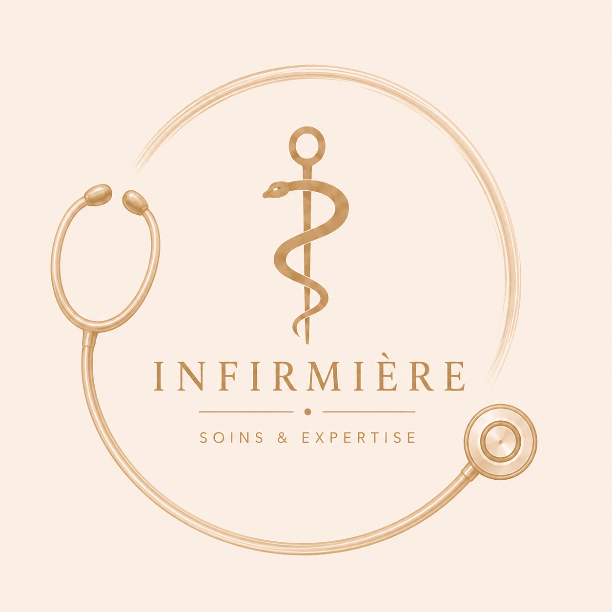
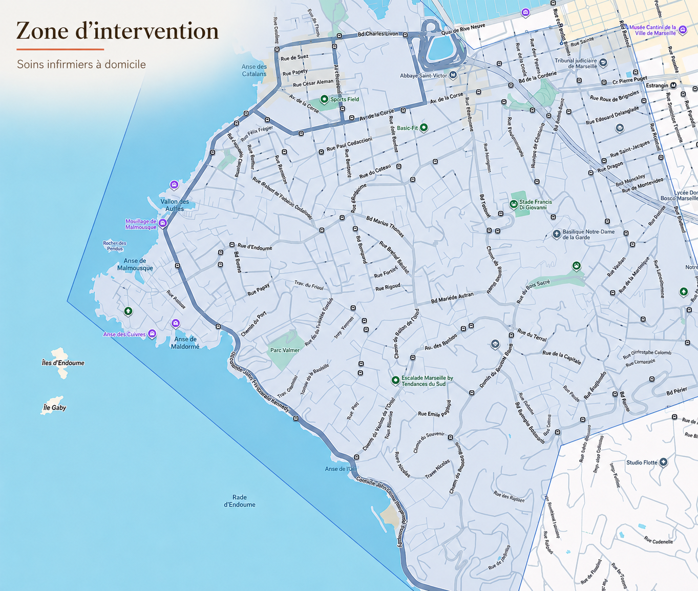

Soins à Domicile & au Cabinet — Marseille 7e
Complémentaires et passionnées, nous mettons notre bienveillance et notre savoir-faire
au service de votre santé et de votre confort au quotidien.
Installées dans le 7ème arrondissement de Marseille, nous assurons la continuité des soins
7j/7 à domicile ainsi qu'au cabinet.
Alexandra Bernard
Infirmière Diplômée d'État
Riche d'un parcours en bloc opératoire notamment en chirurgie orthopédique, Alexandra apporte une grande rigueur dans la réalisation des soins post-opératoires, le suivi des actes techniques et la gestion des plaies complexes.
Lucille Faure
Infirmière Diplômée d'État
Attentive et bienveillante, Lucille privilégie une prise en charge globale du patient. Elle est formée à l'accompagnement de l'endométriose ainsi qu'à la réalisation de bilans de prévention et de santé au quotidien.

Oui, c'est tout à fait possible.
L'exercice infirmier comprend une part d'autonomie appelée le « rôle propre ». Dans ce cadre, l'infirmier(e) est habilité(e) à évaluer vos besoins et dispenser des soins d'hygiène, de prévention, de conseil ou d'accompagnement de sa propre initiative.
« Relèvent du rôle propre de l'infirmier ou de l'infirmière les soins liés aux fonctions d'entretien et de continuité de la vie [...]. Dans ce cadre, l'infirmier ou l'infirmière a compétence pour prendre les initiatives et accomplir les soins qu'il juge nécessaires. »
— Article R. 4311-3 du Code de la Santé Publique
À savoir concernant la prise en charge :
Il vous suffit de nous contacter ou de réserver votre créneau dès que votre date de sortie est confirmée (idéalement 24 à 48h avant). Nous planifions ensemble l'heure du premier passage et les soins requis selon les directives du service hospitalier.
Oui, pour assurer la continuité des soins indispensable à votre santé, le cabinet assure des permanences et interventions à domicile 7 jours sur 7, y compris les dimanches et jours fériés sur rendez-vous.